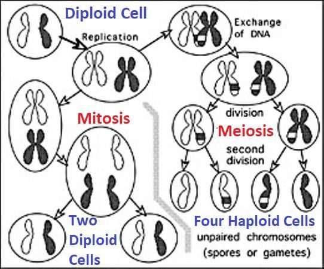

A human cell divides in two ways: Mitosis and Meiosis. Mitosis is responsible for general cell division, producing two identical diploid cells with 23 pairs (46 total) of chromosomes. Meiosis, on the other hand, occurs only in the reproductive organs to produce gametes (sperm or ovum). Each gamete contains 23 haploid chromosomes, ensuring the correct chromosome number is restored during fertilization (fusion of sperm and ovum). Meiosis creates new genetic material for offspring through a process called Chromosome Crossover. Chromosome Crossover is the exchange of genetic material between homologous chromosomes during Prophase I of Meiosis. This process results in recombinant chromosomes, which contribute to genetic variation in offspring: FIGURE 32.4: Chromosome Crossover

চিত্র 32_4 / Figure 32_4
একটি মানব কোষ দুটি উপায়ে বিভক্ত হয়: মাইটোসিস এবং মিয়োসিস। মাইটোসিস সাধারণ কোষ বিভাজনের জন্য দায়ী, 23 জোড়া (মোট 46) ক্রোমোজোম সহ দুটি অভিন্ন ডিপ্লয়েড কোষ তৈরি করে। অন্যদিকে, মিয়োসিস শুধুমাত্র প্রজনন অঙ্গে গ্যামেট (শুক্রাণু বা ডিম্বাণু) উৎপন্ন করে। প্রতিটি গ্যামেটে 23টি হ্যাপ্লয়েড ক্রোমোজোম থাকে, এটি নিশ্চিত করে যে নিষিক্তকরণের সময় সঠিক ক্রোমোজোম সংখ্যা পুনরুদ্ধার করা হয়েছে (শুক্রাণু এবং ডিম্বাণুর সংমিশ্রণ)। মিয়োসিস ক্রোমোজোম ক্রসওভার নামক একটি প্রক্রিয়ার মাধ্যমে সন্তানদের জন্য নতুন জেনেটিক উপাদান তৈরি করে। ক্রোমোজোম ক্রসওভার হল মিয়োসিসের প্রোফেজ I চলাকালীন সমজাতীয় ক্রোমোজোমের মধ্যে জেনেটিক উপাদানের বিনিময়। এই প্রক্রিয়ার ফলে রিকম্বিন্যান্ট ক্রোমোজোম তৈরি হয়, যা বংশধরের জিনগত পরিবর্তনে অবদান রাখে: চিত্র 32.4: ক্রোমোজোম ক্রসওভার
চিত্র 32_4 / Figure 32_4
Chromosome Crossover and independent assortment during Meiosis, offspring inherit a unique combination of alleles and genes that differ from their parents.
মিয়োসিসের সময় ক্রোমোজোম ক্রসওভার এবং স্বাধীন ভাণ্ডার, বংশধররা অ্যালিল এবং জিনের একটি অনন্য সংমিশ্রণ লাভ করে যা তাদের পিতামাতার থেকে আলাদা।
Furthermore, He fashioned him in due proportion, and breathed into him His ruh, and He gave you hearing and sight and feeling; little thanks do ye give!
উপরন্তু, তিনি তাকে যথাযথ অনুপাতে গঠন করেছেন, এবং তার মধ্যে তার রুহ ফুঁকে দিয়েছেন, এবং তিনি আপনাকে শ্রবণশক্তি এবং দৃষ্টিশক্তি এবং অনুভূতি দিয়েছেন; সামান্য ধন্যবাদ আপনি দিতে না!
Remarks:
মন্তব্য:
The genome alone is not sufficient to fashion a human. A zygote placed in a test tube under the most favorable conditions does not form a perfect body; instead, it produces only a lump of flesh. In the mother‘s womb, there is nothing inherently extraordinary. However, the mother‘s body and nafs provide an optimal environment for Allah to cross dimensions and work closely on finer matters. Allah monitors the formation of a human baby in the mother‘s womb. Remember, when Allah slightly revealed Himself on the Mount of Moses, the Mount was burned. Yet, Allah can act safely through a human being. As Allah fashions a baby in the mother‘s womb, the baby‘s nafs (primary / a composite soul) is designed as a program of creation. Therefore, during resurrection, the mother‘s womb and Allah‘s intimate involvement in the process will no longer be necessary. A human possesses a special ruh (elementary soul / an unknown force field) without which consciousness is impossible. Allah breathes this special ruh into a baby just after birth (similar to how He breathed ruh into Adam), enabling the baby to become conscious and cry for the first time. Allah detaches the ruh when a person sleeps, leaving him with an incomplete nafs (main or composite soul, a combination of unknown force fields). The ruh is returned upon waking, restoring consciousness. The ruh is removed from a body during sleep and death. The ruh of a human is a designed force field of an unknown kind, anchored in specific muscles of the chest. With the help of the nafs, chest muscles, nervous system, and brain, the ruh produces the virtual brain, which extends beyond the physical brain. The ruh acts as the platform for the virtual brain. We call the virtual brain mind (qalb). The virtual brain (mind / qalb) governs hearing, seeing, and feelings, as the verses under discussion describe: ―Furthermore, He fashioned him in due proportion, and breathed into him His ruh, and He gave you hearing and sight and feeling…‖ How the ruh relates to hearing, sight, and feeling is discussed in detail in Section-10 of Chapter-6. To recapitulate, a brief explanation of its relationship to sight and feelings is provided below: One‘s material brain cannot cope with the rapidly changing sights while driving a car. Each sight provides a large amount of data, and the brain would become overloaded if all this data were processed deliberately. To manage this, unimportant data is quickly erased, and the brain learns to process visual information by matching key points. For example, a Caucasian may perceive all Mongoloids as looking alike because his brain has not learned the key points that differentiate them. It is likely that the virtual brain (qalbs/minds) plays a role in forming visions, with much of the data being erased before reaching the material brain. In certain situations, we may be driven solely by our virtual brains. The virtual brain also enables one to experience emotions. Sorrow and joy are felt in the chest, where the ruh is anchored. It is worth noting that sorrow and joy are associated with the ruh, whereas other emotions are linked to the force fields of the nafs. Ruh and nafs are discussed in detail in Section 10 of Chapter 6.
শুধুমাত্র জিনোমই একজন মানুষের ফ্যাশন করার জন্য যথেষ্ট নয়। সবচেয়ে অনুকূল অবস্থার অধীনে একটি পরীক্ষা টিউবে স্থাপন করা একটি জাইগোট একটি নিখুঁত শরীর গঠন করে না; পরিবর্তে, এটি শুধুমাত্র মাংসের একটি পিণ্ড তৈরি করে। মায়ের গর্ভে সহজাতভাবে অসাধারণ কিছু নেই। যাইহোক, মায়ের শরীর এবং নফস আল্লাহকে মাত্রা অতিক্রম করতে এবং সূক্ষ্ম বিষয়ে ঘনিষ্ঠভাবে কাজ করার জন্য একটি অনুকূল পরিবেশ প্রদান করে। আল্লাহ মাতৃগর্ভে মানব শিশুর গঠন পর্যবেক্ষণ করেন। মনে রাখবেন, আল্লাহ যখন মুসার পাহাড়ে নিজেকে প্রকাশ করলেন, তখন পর্বতটি পুড়ে গেল। তবুও আল্লাহ একজন মানুষের মাধ্যমে নিরাপদে কাজ করতে পারেন। আল্লাহ যেমন মাতৃগর্ভে একটি শিশুকে গঠন করেন, তেমনি শিশুর নফস (প্রাথমিক/একটি যৌগিক আত্মা) সৃষ্টির একটি প্রোগ্রাম হিসেবে ডিজাইন করা হয়েছে। অতএব, পুনরুত্থানের সময়, মাতৃগর্ভ এবং এই প্রক্রিয়ায় আল্লাহর অন্তরঙ্গ সম্পৃক্ততার আর প্রয়োজন হবে না। একজন মানুষের একটি বিশেষ রুহ (প্রাথমিক আত্মা / একটি অজানা শক্তি ক্ষেত্র) আছে যা ছাড়া চেতনা অসম্ভব। আল্লাহ জন্মের পরপরই একটি শিশুর মধ্যে এই বিশেষ রূহ ফুঁক দেন (যেভাবে তিনি আদমের মধ্যে রুহ ফুঁক দিয়েছিলেন), শিশুটিকে প্রথমবারের মতো সচেতন হতে এবং কাঁদতে সক্ষম করে। একজন ব্যক্তি যখন ঘুমায় তখন আল্লাহ রুহকে বিচ্ছিন্ন করেন, তাকে একটি অসম্পূর্ণ নফস (প্রধান বা যৌগিক আত্মা, অজানা শক্তি ক্ষেত্রগুলির সংমিশ্রণ) দিয়ে রেখে যান। জেগে ওঠা, চেতনা পুনরুদ্ধার করে রুহ ফিরে আসে। ঘুম ও মৃত্যুর সময় শরীর থেকে রুহ বের হয়ে যায়। মানুষের রুহ হল একটি অজানা ধরণের একটি পরিকল্পিত বল ক্ষেত্র, যা বুকের নির্দিষ্ট পেশীগুলিতে নোঙ্গর করে। নফস, বুকের পেশী, স্নায়ুতন্ত্র এবং মস্তিষ্কের সাহায্যে রুহ ভার্চুয়াল মস্তিষ্ক তৈরি করে, যা শারীরিক মস্তিষ্কের বাইরেও বিস্তৃত। রুহ ভার্চুয়াল মস্তিষ্কের প্ল্যাটফর্ম হিসাবে কাজ করে। আমরা ভার্চুয়াল মস্তিষ্কের মন (ক্বালব) বলি। ভার্চুয়াল মস্তিষ্ক (মন/ক্বালব) শ্রবণ, দেখা এবং অনুভূতিগুলিকে নিয়ন্ত্রণ করে, যেমন আলোচনার অধীন আয়াতগুলি বর্ণনা করে: "এছাড়াও, তিনি তাকে যথাযথ অনুপাতে গঠন করেছেন, এবং তার মধ্যে তাঁর রুহ ফুঁক দিয়েছেন, এবং তিনি আপনাকে শ্রবণশক্তি এবং দৃষ্টিশক্তি এবং অনুভূতি দিয়েছেন..." রুহ কীভাবে শ্রবণ, দৃষ্টিশক্তি এবং অনুভূতির সাথে সম্পর্কিত - সে সম্পর্কে বিস্তারিত আলোচনা করা হয়েছে। পুনর্নির্মাণ করার জন্য, দৃষ্টিশক্তি এবং অনুভূতির সাথে এর সম্পর্কের একটি সংক্ষিপ্ত ব্যাখ্যা নীচে সরবরাহ করা হয়েছে: একজনের বস্তুগত মস্তিষ্ক গাড়ি চালানোর সময় দ্রুত পরিবর্তনশীল দৃশ্যগুলির সাথে মানিয়ে নিতে পারে না। প্রতিটি দৃষ্টিশক্তি প্রচুর পরিমাণে ডেটা সরবরাহ করে এবং যদি এই সমস্ত ডেটা ইচ্ছাকৃতভাবে প্রক্রিয়া করা হয় তবে মস্তিষ্ক ওভারলোড হয়ে যাবে। এটি পরিচালনা করার জন্য, গুরুত্বহীন ডেটা দ্রুত মুছে ফেলা হয়, এবং মস্তিষ্ক মূল পয়েন্টগুলি মেলে ভিজ্যুয়াল তথ্য প্রক্রিয়া করতে শেখে। উদাহরণস্বরূপ, একজন ককেশীয় সমস্ত মঙ্গোলয়েডকে একই রকম দেখতে দেখতে পারে কারণ তার মস্তিষ্ক তাদের পার্থক্যকারী মূল বিষয়গুলি শিখেনি। এটি সম্ভবত ভার্চুয়াল মস্তিষ্ক (ক্বালবস/মন) দৃষ্টিভঙ্গি গঠনে ভূমিকা পালন করে, বস্তুগত মস্তিষ্কে পৌঁছানোর আগে বেশিরভাগ ডেটা মুছে ফেলা হয়। কিছু পরিস্থিতিতে, আমরা শুধুমাত্র আমাদের ভার্চুয়াল মস্তিষ্ক দ্বারা চালিত হতে পারে। ভার্চুয়াল মস্তিষ্ক একজনকে আবেগ অনুভব করতে সক্ষম করে। দুঃখ ও আনন্দ বুকে অনুভূত হয়, যেখানে রুহ নোঙর করে। এটা লক্ষণীয় যে দুঃখ এবং আনন্দ রূহের সাথে জড়িত, যেখানে অন্যান্য আবেগগুলি নফসের শক্তি ক্ষেত্রগুলির সাথে যুক্ত। রুহ ও নফস সম্পর্কে 6 অধ্যায়ের 10 নম্বর ধারায় বিস্তারিত আলোচনা করা হয়েছে।
Section-4 of Chapter-32 [Verse 10-14]: Immediate Judgment
অধ্যায়-32 এর ধারা-4 [আয়াত 10-14]: তাৎক্ষণিক বিচার
And they say: "What! When we are lost in the earth, shall we indeed be in a creation renewed? Nay, they deny the meeting with their Lord. Say: "The angel of death put in charge of you will take your souls; then shall ye be brought back to your Lord. If only thou could see when the guilty ones will bend low their heads before their Lord, "Our Lord! We have seen and we have heard. Now then send us back; we will work righteousness, for we do indeed believe."
এবং তারা বলে: "কি! আমরা যখন পৃথিবীতে হারিয়ে যাব, তখন কি আমরা নতুন করে সৃষ্টি করব? বরং, তারা তাদের পালনকর্তার সাথে সাক্ষাৎকে অস্বীকার করে। বলুন: "তোমাদের তত্ত্বাবধানে নিযুক্ত মৃত্যুর ফেরেশতা তোমাদের আত্মা হরণ করবে; অতঃপর তোমাদের প্রভুর কাছে প্রত্যাবর্তন করা হবে। আপনি যদি দেখতেন, যখন অপরাধীরা তাদের পালনকর্তার সামনে মাথা নিচু করে বলবে, হে আমাদের পালনকর্তা! আমরা দেখেছি এবং শুনেছি। এখন আমাদেরকে ফেরত পাঠান, আমরা সৎকাজ করব, আমরা বিশ্বাস করি।
Remarks:
মন্তব্য:
We know that an angel named Azrail collects the soul (nafs) of a person at the time of death. The angel places the soul of a sinner into the Sijjin and the soul of a Believer into the Illiyin, where it is further prepared for its final destination. Therefore, the primary judgment— determining whether one will go to Jannaat or Hell—is made immediately after death by Allah. The verses under discussion indicate that the souls (nafs) of humans are taken to Allah for judgment immediately after their deaths. The verses describe their condition: "Our Lord! We have seen and we have heard. Now then send us back; we will work righteousness, for we do indeed believe." However, a nafs is not intelligent enough to present its arguments. Therefore, it is important to understand how a nafs acquires intelligence and the knowledge of its earthly life, enabling it to interact with Allah during the Judgment. 1. Preparing a Nafs for Judgment before it is sent to Illiyin or Sijjin.
আমরা জানি আজরাইল নামক একজন ফেরেশতা মৃত্যুর সময় ব্যক্তির রূহ (নফস) সংগ্রহ করেন। ফেরেশতা একজন পাপীর আত্মাকে সিজ্জিনে এবং একজন মুমিনের আত্মাকে ইল্লিয়ীনে স্থান দেন, যেখানে তাকে তার চূড়ান্ত গন্তব্যের জন্য আরও প্রস্তুত করা হয়। অতএব, প্রাথমিক বিচার- কেউ জান্নাতে যাবে নাকি জাহান্নামে যাবে- তা আল্লাহর পক্ষ থেকে মৃত্যুর পরপরই করা হয়। আলোচ্য আয়াতগুলি নির্দেশ করে যে মানুষের আত্মা (নফস) তাদের মৃত্যুর পরপরই বিচারের জন্য আল্লাহর কাছে নিয়ে যাওয়া হয়। আয়াতে তাদের অবস্থা বর্ণনা করা হয়েছে: "হে আমাদের পালনকর্তা! আমরা দেখেছি এবং শুনেছি। এখন আমাদেরকে ফেরত পাঠান, আমরা সৎ কাজ করব, কারণ আমরা সত্যই বিশ্বাস করি।" যাইহোক, একজন নফস তার যুক্তি উপস্থাপন করার জন্য যথেষ্ট বুদ্ধিমান নয়। অতএব, এটা বোঝা গুরুত্বপূর্ণ যে কীভাবে একজন নফস তার পার্থিব জীবনের বুদ্ধিমত্তা এবং জ্ঞান অর্জন করে, বিচারের সময় তাকে আল্লাহর সাথে যোগাযোগ করতে সক্ষম করে। 1. ইল্লিয়িন বা সিজ্জিনে পাঠানোর আগে বিচারের জন্য একটি নফস প্রস্তুত করা।
The soul (nafs) of a deceased person is first taken by Azrail (the Angel of Death) to the Arsh, where his holographic body is produced by the CCU (Central Computer of the Universes, as discussed in Section 9 of Chapter 6). The CCU can produce a holographic human due to the following reasons: The CCU is a highly advanced divine computer, consisting of the Pen, the Saving Disc (Lawh-Mahfuz / Disc Saved), and the Motherboard (Mother of the Book), where Allah created a virtual universe as His Master Design before creating the physical universe. We were created in the virtual universe through our nafses and genome codes, and we lived holographic lives on a holographic Earth within the CCU. Currently, the memory data of each person is collected by the angel every night, as stated in the following verse:
একজন মৃত ব্যক্তির আত্মা (নফস) প্রথমে আজরাইল (মৃত্যুর ফেরেশতা) দ্বারা আরশে নিয়ে যায়, যেখানে তার হলোগ্রাফিক শরীর সিসিইউ (মহাবিশ্বের সেন্ট্রাল কম্পিউটার, অধ্যায় 6-এর অধ্যায় 9-এ আলোচনা করা হয়েছে) দ্বারা উত্পাদিত হয়। CCU নিম্নলিখিত কারণে একটি হলোগ্রাফিক মানব তৈরি করতে পারে: CCU হল একটি অত্যন্ত উন্নত ঐশ্বরিক কম্পিউটার, যার মধ্যে রয়েছে কলম, সেভিং ডিস্ক (লাহ-মাহফুজ/ডিস্ক সংরক্ষিত), এবং মাদারবোর্ড (বুকের মা), যেখানে ভৌত মহাবিশ্ব সৃষ্টির আগে আল্লাহ তাঁর মাস্টার ডিজাইন হিসাবে একটি ভার্চুয়াল মহাবিশ্ব তৈরি করেছেন। আমরা আমাদের নফসেস এবং জিনোম কোডের মাধ্যমে ভার্চুয়াল মহাবিশ্বে তৈরি হয়েছি এবং আমরা CCU-এর মধ্যে একটি হলোগ্রাফিক পৃথিবীতে হলোগ্রাফিক জীবন যাপন করেছি। বর্তমানে, প্রতিটি ব্যক্তির মেমরি ডেটা প্রতি রাতে ফেরেশতা দ্বারা সংগ্রহ করা হয়, যেমনটি নিম্নলিখিত আয়াতে বলা হয়েছে:
―It is He who does take your ruhs by night, and has knowledge of all that you have done by day; by day does He raise you up again; that a term appointed be fulfilled. In the end, unto Him will be your return; then will He show you the truth of all that you did.‖ [Al Quran 6:60] The angel collects and preserves the brain data in the CCU, where each human‘s information is stored in appropriate files and folders. After the nafs of a dead person is taken to the Arsh, it (nafs) is energized with his virtual physique, produced from his genome code. And his memory file is connected to his virtual brain. Then the holographic human is projected before Allah for the Judgment. After the nafs of a deceased person is taken to the Arsh, it is energized with his virtual physique, produced from his DNA code, a copy of which is stored in the CCU. His memory file is linked to the virtual brain. The person is then almost like a human on the Earth. The holographic human is subsequently projected before Allah for judgment. Subsequently, he is placed into the holographic world of Illiyin or Sijjin, where he meets his deceased relatives. They will remain there until the Day of Judgment. Illiyin and Sijjin are highly developed servers linked to the CCU, capable of supporting the holographic worlds and holographic humans.
-তিনিই রাত্রিকালে তোমার রুহ গ্রহণ করেন এবং দিনে যা কিছু করেছেন সে সম্পর্কে তিনি জানেন; দিনে দিনে তিনি তোমাকে পুনরুত্থিত করেন; যাতে একটি নির্ধারিত মেয়াদ পূর্ণ হয়। শেষ পর্যন্ত, তাঁর কাছেই তোমাদের প্রত্যাবর্তন হবে; তারপর তিনি আপনাকে দেখাবেন যে আপনি যা করেছেন তার সত্যতা।'' [আল কোরান 6:60] দেবদূত সিসিইউতে মস্তিষ্কের ডেটা সংগ্রহ এবং সংরক্ষণ করেন, যেখানে প্রতিটি মানুষের তথ্য উপযুক্ত ফাইল এবং ফোল্ডারে সংরক্ষণ করা হয়। একজন মৃত ব্যক্তির নফস আরশে নিয়ে যাওয়ার পর, এটি (নফস) তার জিনোম কোড থেকে উত্পাদিত তার ভার্চুয়াল দেহ দ্বারা উজ্জীবিত হয়। আর তার মেমরির ফাইল তার ভার্চুয়াল ব্রেইনের সাথে সংযুক্ত। তারপর হলোগ্রাফিক মানবকে বিচারের জন্য আল্লাহর সামনে উপস্থাপন করা হয়। একজন মৃত ব্যক্তির নফসকে আরশে নিয়ে যাওয়ার পর, এটি তার ভার্চুয়াল শরীরে উজ্জীবিত হয়, তার ডিএনএ কোড থেকে উত্পাদিত হয়, যার একটি অনুলিপি সিসিইউতে সংরক্ষণ করা হয়। তার স্মৃতি ফাইল ভার্চুয়াল মস্তিষ্কের সাথে সংযুক্ত করা হয়। মানুষটি তখন প্রায় পৃথিবীর মানুষের মতো। হলোগ্রাফিক মানবকে পরবর্তীতে বিচারের জন্য আল্লাহর সামনে উপস্থাপন করা হয়। পরবর্তীকালে, তাকে ইল্লিয়িন বা সিজ্জিনের হলোগ্রাফিক জগতে রাখা হয়, যেখানে তিনি তার মৃত আত্মীয়দের সাথে দেখা করেন। কিয়ামত পর্যন্ত তারা সেখানেই থাকবে। Illiyin এবং Sijjin হল CCU-এর সাথে যুক্ত অত্যন্ত উন্নত সার্ভার, হলোগ্রাফিক বিশ্ব এবং হলোগ্রাফিক মানুষের সমর্থন করতে সক্ষম।
2. Points to Know about Illiyin and Sijjin:
2. ইল্লিয়িন এবং সিজ্জিন সম্পর্কে জানার বিষয়:
We need to understand the following points in order to comprehend Illiyin and Sijjin.
ইল্লিয়ীন ও সিজ্জিন বোঝার জন্য আমাদের নিম্নলিখিত বিষয়গুলো বুঝতে হবে।
a. Illiyin and Sijjin are programmed hard drives of the servers linked to the Central Computer of the Universes (CCU). These hard drives are referred to as the 'Book Inscribed: Nay! Surely the Book of the wicked is in Sijjin. And what will explain to thee what Sijjin is? A Book inscribed! [Al Quran 83:7-9]
ক ইলিয়াইন এবং সিজ্জিন হল সেন্ট্রাল কম্পিউটার অফ দ্য ইউনিভার্সেস (সিসিইউ) এর সাথে সংযুক্ত সার্ভারগুলির প্রোগ্রাম করা হার্ড ড্রাইভ। এই হার্ড ড্রাইভগুলিকে 'বুক ইনস্ক্রাইবড: না! নিশ্চয়ই জালেমদের কিতাব সিজ্জিনে রয়েছে। আর সিজ্জিন কি তা তোমাকে কি বুঝাবে? একটি বই খোদাই করা! [আল কুরআন ৮৩:৭-৯]
b. Sijjin governs the holographic world of the sinners, which is located in the deep Barzakh. Illiyin is a similar establishment for the righteous, but it is situated in the higher Barzakh. c. The Barzakh is a non-negotiable barrier space that separates the Samawaat (this universe) from the Jannaat (another universe).
খ. সিজ্জিন পাপীদের হলোগ্রাফিক জগত পরিচালনা করে, যা গভীর বরজাখে অবস্থিত। ইলিয়াইন ধার্মিকদের জন্য অনুরূপ স্থাপনা, তবে এটি উচ্চ বরযাখের মধ্যে অবস্থিত। গ. বারজাখ হল একটি অ-আলোচনাযোগ্য বাধা স্থান যা সামাওয়াতকে (এই মহাবিশ্ব) জান্নাত (অন্য মহাবিশ্ব) থেকে পৃথক করে।
FIGURE 32.5: Barzakh, Illiyin, Sijjin

চিত্র 32_5 / Figure 32_5
চিত্র 32.5: বারজাখ, ইল্লিয়িন, সিজ্জিন
চিত্র 32_5 / Figure 32_5
3. Punishment of the Grave
3. কবরের শাস্তি
A human can be punished in the holographic life of Illiyin or Sijjin, which is known as the Punishment of the Grave. The human brain cannot distinguish between virtual reality and physical reality. For example, one may close one‘s eyes and imagine sitting on the edge of a fifty-story building; one will still feel fear. Similarly, the feeling of pain is a virtual experience, as it is perceived by the brain. Therefore, there is no reason to underestimate the punishment in the virtual realm of Sijjin. A human nafs does not change after death. We know that a temperature of 1028 degrees K is required to merge the Strong Nuclear Force Field with the Electromagnetic Force Field. Similarly, the human nafs is a combination of unknown force fields (yet to be discovered). It is not easy to change. However, the nafs of a sinner becomes more resilient in the Sijjin, with some corrections applied. This process involves the application of extreme heat, which constitutes the 'Punishment of the Grave.' The person (hell dweller) will be resurrected as a towering giant, standing a thousand kilometers tall. He will require space from Makkah to Madinah just to sit. Allah, in His Mercy and as an unprecedented Creator, will not send a servant unprepared for his destination, even if the servant is a sinner. There may also be punishments in Illiyin. A person destined for Jannaat may have committed sins that harmed their nafs. In such cases, their nafs may be corrected through punishments in Illiyin. Illiyin and Sijjin are deliberately discussed in Chapter-83. Finally, as discussed above, our memories are collected every night. The memories of the last day are gathered by scanning the brain in the grave. The asking of the three questions in the grave—'Who is your Lord? What is your religion? Who is your prophet?'—illustrates this process. If We had so willed, We could certainly have brought every soul its true guidance, but the Word from Me will come true: "I will fill hell with jinns and men all together"– Taste ye then; for ye forgot the meeting of this Day of yours, and We too will forget you—taste ye the Penalty of Eternity for your deeds!
ইল্লিয়িন বা সিজ্জিনের হলোগ্রাফিক জীবনে একজন মানুষকে শাস্তি দেওয়া যেতে পারে, যা কবরের শাস্তি নামে পরিচিত। মানুষের মস্তিষ্ক ভার্চুয়াল বাস্তবতা এবং শারীরিক বাস্তবতার মধ্যে পার্থক্য করতে পারে না। উদাহরণস্বরূপ, কেউ একজনের চোখ বন্ধ করে কল্পনা করতে পারে যে পঞ্চাশ তলা ভবনের কিনারায় বসে আছে; কেউ এখনও ভয় অনুভব করবে। একইভাবে, ব্যথার অনুভূতি একটি ভার্চুয়াল অভিজ্ঞতা, কারণ এটি মস্তিষ্ক দ্বারা অনুভূত হয়। অতএব, সিজ্জিনের ভার্চুয়াল জগতে শাস্তিকে খাটো করে দেখার কোনো কারণ নেই। মানুষের নফস মৃত্যুর পর পরিবর্তন হয় না। আমরা জানি যে স্ট্রং নিউক্লিয়ার ফোর্স ফিল্ডকে ইলেক্ট্রোম্যাগনেটিক ফোর্স ফিল্ডের সাথে একত্রিত করতে 1028 ডিগ্রি K তাপমাত্রা প্রয়োজন। একইভাবে, মানব নফস হল অজানা বল ক্ষেত্রগুলির সংমিশ্রণ (এখনও আবিষ্কার করা হয়নি)। এটি পরিবর্তন করা সহজ নয়। যাইহোক, কিছু সংশোধন প্রয়োগের সাথে সিজ্জিনে একজন পাপীর নফস আরও স্থিতিস্থাপক হয়ে ওঠে। এই প্রক্রিয়ায় চরম উত্তাপ প্রয়োগ করা জড়িত, যা 'কবরের শাস্তি' গঠন করে। ব্যক্তিটি (জাহান্নামবাসী) এক হাজার কিলোমিটার লম্বা বিশাল দৈত্য হিসাবে পুনরুত্থিত হবে। তার শুধু বসার জন্য মক্কা থেকে মদীনা পর্যন্ত জায়গা লাগবে। আল্লাহ তাঁর রহমতে এবং একজন অভূতপূর্ব স্রষ্টা হিসেবে একজন বান্দাকে তার গন্তব্যের জন্য অপ্রস্তুতভাবে পাঠাবেন না, যদিও বান্দা পাপী হয়। ইল্লিয়িনেও শাস্তি হতে পারে। জান্নাতের জন্য নির্ধারিত ব্যক্তি এমন পাপ করেছে যা তাদের নফসকে ক্ষতিগ্রস্ত করেছে। এই ধরনের ক্ষেত্রে, ইল্লিয়ীনে শাস্তির মাধ্যমে তাদের নফস সংশোধন করা যেতে পারে। ইল্লিয়িন এবং সিজ্জিন পরিকল্পিতভাবে অধ্যায়-83 এ আলোচনা করা হয়েছে। অবশেষে, উপরে আলোচিত হিসাবে, আমাদের স্মৃতি প্রতি রাতে সংগ্রহ করা হয়। কবরে মস্তিষ্ক স্ক্যান করে জড়ো করা হয় শেষ দিনের স্মৃতি। কবরে তিনটি প্রশ্ন করা- 'তোমার রব কে? তোমার ধর্ম কি? আপনার নবী কে?'—এই প্রক্রিয়াটি ব্যাখ্যা করে। যদি আমরা ইচ্ছা করতাম, তবে অবশ্যই প্রত্যেককে তার সঠিক পথনির্দেশ আনতে পারতাম, কিন্তু আমার কাছ থেকে এই বাণী সত্য হবে: "আমি জ্বিন ও মানুষ সকলকে দিয়ে জাহান্নাম পূর্ণ করব"- তাহলে আস্বাদন কর; কেননা তোমরা তোমাদের এই দিনের সাক্ষাতের কথা ভুলে গেছ এবং আমরাও তোমাদের ভুলে যাব- তোমরা তোমাদের কর্মের জন্য অনন্তকালের শাস্তির স্বাদ গ্রহণ কর!
Section 5 of Chapter-32 [Verse 15-17]: They Believe
অধ্যায়-32 [আয়াত 15-17] এর অধ্যায় 5: তারা বিশ্বাস করে
It is they believe in Our verses those who when they are recited to them fall down in adoration and celebrate the praises of their Lord, nor are they puffed up with pride; their limbs do forsake their beds of sleep the while they call on their Lord in Fear and Hope, and they spend out of the sustenance which We have bestowed on them. Now no person knows what delights of the eye are kept hidden for them, as a reward for their deeds.
তারাই আমার আয়াতে বিশ্বাস করে যাদের কাছে তাদের পাঠ করা হলে তারা উপাসনায় পড়ে যায় এবং তাদের পালনকর্তার প্রশংসা করে এবং তারা অহংকার করে না। তাদের অঙ্গ-প্রত্যঙ্গ তাদের ঘুমের শয্যা পরিত্যাগ করে যখন তারা তাদের পালনকর্তাকে ভয়ে ও আশায় ডাকে এবং আমি তাদেরকে যে রিযিক দিয়েছি তা থেকে তারা ব্যয় করে। এখন কেউ জানে না তাদের জন্য চোখের কী আনন্দ লুকিয়ে রাখা হয়েছে, তাদের কাজের পুরস্কার হিসেবে।
Section 6 of Chapter-32 [Verse18-20]: Not Equals
অধ্যায়-32 [Verse18-20] এর ধারা 6: সমান নয়
Is then the man who believes no better than the man who is rebellious and wicked? Not equal are they: For those who believe and do righteous deeds Jannaat-ul-Maawa are homes for their deeds. As to those who are rebellious and wicked, their abode will be the Fire; every time they wish to get away there-from, they will be forced there-into, and it will be said to them, "Taste ye the penalty of the fire, the which ye were wont to reject as false." Section 7 of Chapter-32 [Verse 21-22]: Punishment in this World
তাহলে যে লোকটি বিশ্বাস করে সে কি বিদ্রোহী ও দুষ্ট ব্যক্তির চেয়ে উত্তম নয়? তারা সমান নয়: যারা বিশ্বাস করে এবং সৎকাজ করে তাদের জন্য জান্নাতুল মাওয়া তাদের কাজের জন্য ঘর। যারা বিদ্রোহী ও পাপাচারী, তাদের আবাস হবে আগুন। যখনই তারা সেখান থেকে চলে যেতে চাইবে, তখনই তাদেরকে সেখানে জোরপূর্বক প্রবেশ করানো হবে এবং তাদেরকে বলা হবে, তোমরা আগুনের শাস্তি আস্বাদন কর, যাকে তোমরা মিথ্যা বলে প্রত্যাখ্যান করতে। অধ্যায়-32 এর ধারা 7 [পদ 21-22]: এই পৃথিবীতে শাস্তি
And indeed, We will make them taste of the penalty of this (life) prior to the supreme penalty in order that they may return. And who does more wrong than one to who are recited the verses of his Lord, and who then turns away there- from? Verily, from those who transgress, We shall exact retribution.
এবং অবশ্যই, আমি তাদের এই (জীবনের) শাস্তির আস্বাদন করাব সর্বোচ্চ শাস্তির পূর্বে, যাতে তারা ফিরে আসে। আর তার চেয়ে বড় অন্যায় আর কে হবে যাকে তার পালনকর্তার আয়াত পাঠ করা হয়, অতঃপর কে সেখান থেকে মুখ ফিরিয়ে নেয়? যারা সীমালঙ্ঘন করে, তাদের থেকে আমি অবশ্যই প্রতিশোধ নেব।
Section 8 of Chapter-32 [Verse 23-30]: Conclusion
অধ্যায়-32 এর ধারা 8 [আয়াত 23-30]: উপসংহার
We did indeed aforetime give the Book to Moses, be not then in doubt of its reaching, and We made it a guide to the children of Israel. And We appointed from among them leaders giving guidance under Our command so long as they persevered with patience and continued to have faith in Our verses. Verily, thy Lord will judge between them on the Day of Judgment in the matters wherein they differ. Does it not teach them a lesson, how many generations We destroyed before them—in whose dwellings they go to and fro? Verily, in that are signs. Do they not then listen? And do they not see that We do drive rain to parched soil and produce therewith crops providing food for their cattle and themselves? Have they not the vision? They say: "When will this decision be, if ye are telling the truth?" Say: "On the Day of Decision no profit will it be to Unbelievers if they believe, nor will they be granted a respite." So, turn away from them and wait; they too are waiting.
নিশ্চয়ই আমরা ইতিপূর্বে মূসাকে কিতাব দিয়েছিলাম, তাহলে এর পৌছানোর ব্যাপারে সন্দেহ পোষণ করো না এবং আমি একে বনী ইসরাঈলের জন্য পথপ্রদর্শক করেছিলাম। এবং আমি তাদের মধ্য থেকে আমাদের নির্দেশে পথপ্রদর্শনকারী নেতাদের নিযুক্ত করেছি যতক্ষণ না তারা ধৈর্য্য ধরে এবং আমাদের আয়াতের প্রতি অবিচল বিশ্বাস রাখে। নিঃসন্দেহে আপনার পালনকর্তা তাদের মধ্যে বিচারের দিন ফয়সালা করবেন যে বিষয়ে তারা মতভেদ করে। এটা কি তাদের শিক্ষা দেয় না যে, তাদের আগে আমরা কত প্রজন্মকে ধ্বংস করেছি- যাদের বাসস্থানে তারা ঘুরে বেড়ায়? নিশ্চয় এতে নিদর্শন রয়েছে। তারা কি শোনে না? এবং তারা কি দেখে না যে, আমি বৃষ্টিকে শুকিয়ে যাওয়া মাটিতে প্রবাহিত করি এবং তা দিয়ে ফসল উৎপাদন করি তাদের গবাদি পশু ও তাদের নিজেদের জন্য? তাদের কি দৃষ্টি নেই? তারা বলেঃ তোমরা যদি সত্যবাদী হও তবে এ সিদ্ধান্ত কবে হবে? বলুন, ফয়সালার দিন কাফেরদের কোন লাভ হবে না যদি তারা ঈমান আনে এবং তাদেরকে অবকাশও দেয়া হবে না। অতএব, তাদের থেকে মুখ ফিরিয়ে নিন এবং অপেক্ষা করুন; তারাও অপেক্ষা করছে।